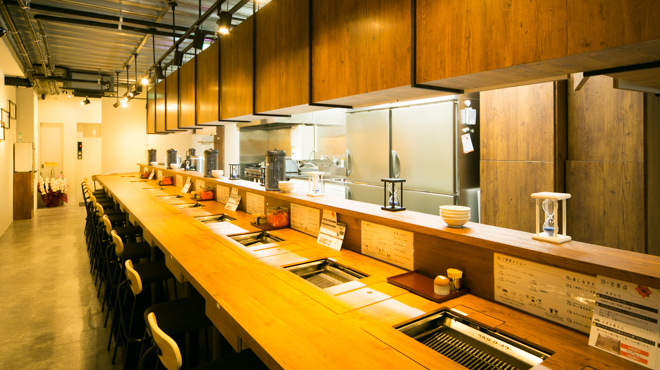
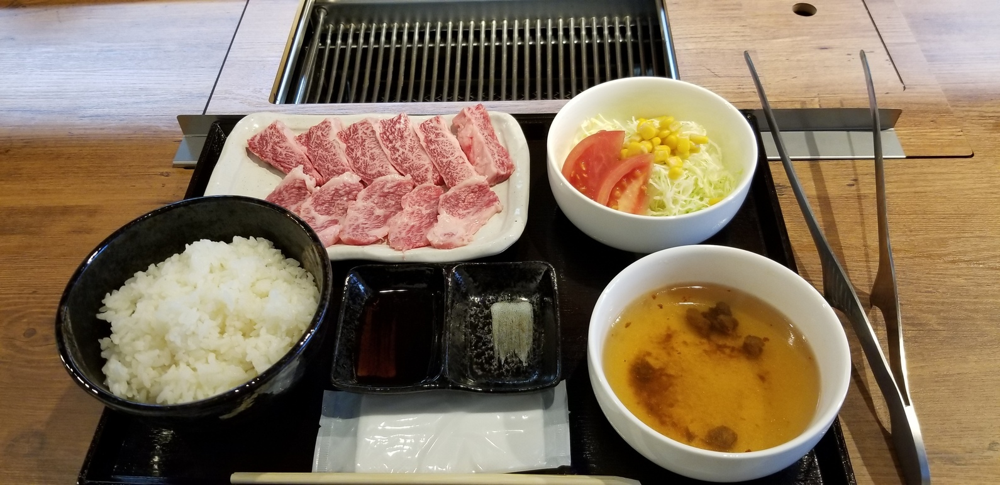

[東京 赤坂]
和牛職人 赤坂本店
おすすめのポイント
赤坂見附駅から、歩いて２分ほどのところにある焼肉店です。
このお店は、カウンター席のみとなっており、完全に一人向けのお店です。
各席には一人用のロースターが設置されていて、自分のペースで食事を楽しむことができます。

メニューは、定食と食べ放題があり、券売機での発券式となっています。
特に、食べ放題は２９分間黒毛和牛食べ放題(1500円〜)という面白いコンセプトになっています！
ゆったり食べるというよりは、ささっと美味しい肉を食べたいという方向けですね。

お店の情報
| 店名 | 和牛職人 赤坂本店 |
|---|---|
| 住所 | 東京都港区赤坂3-10-6 LuLud AKASAKA 2F |
| アクセス | 赤坂見附駅より徒歩2分
赤坂駅より徒歩6分 赤坂見附駅から99m |
| 電話 | 050-5596-7863 |
| 営業時間 | [全日]
11:00〜14:00 17：00～22：00(LO21:30) |
| 定休日 | 日曜祝日
|
| 予算 |
ランチ 2000～2999円
ディナー 2000～2999円 |
| HP |
https://tabelog.com/tokyo/ A1308/A130801/13229305/ |